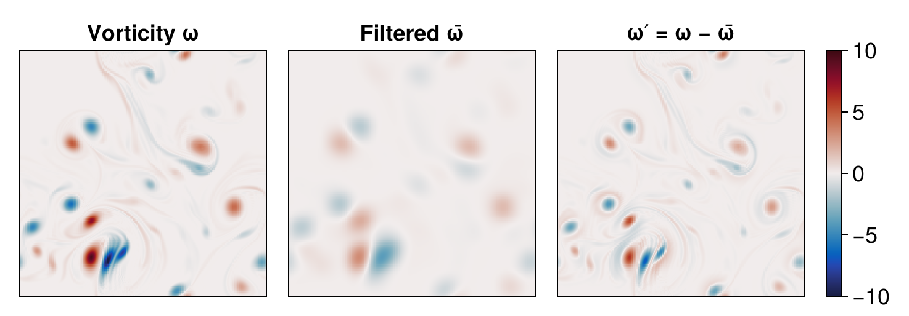
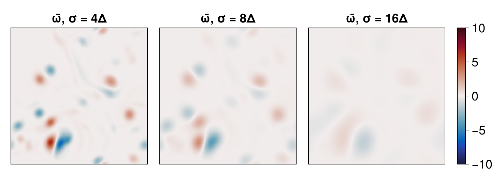
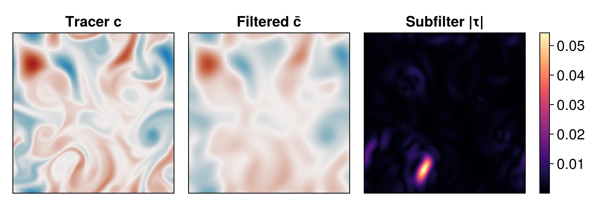
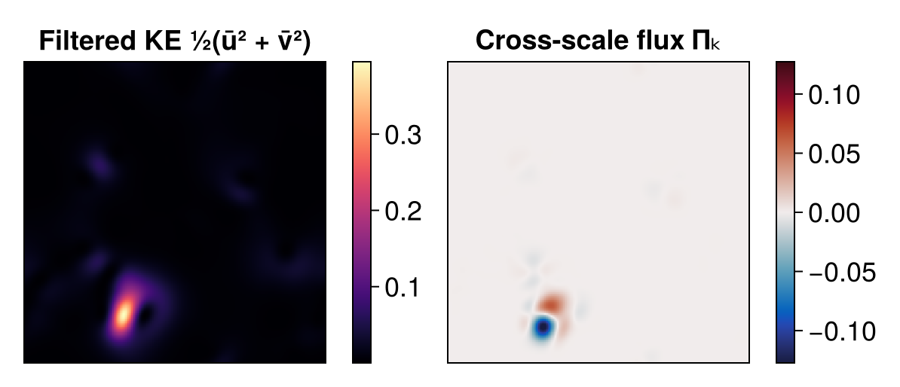
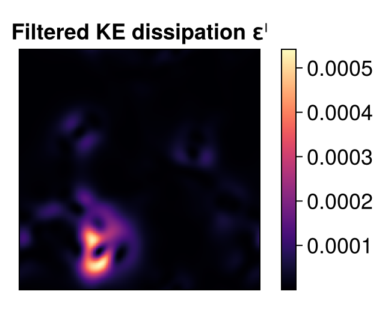

Spatial filtering and subfilter fluxes
In this example we use Oceanostics' GaussianFilter to filter a two-dimensional turbulent flow. Spatial filtering splits a field into a smooth, large-scale (filtered) part and a small-scale (subfilter) fluctuation,
\[\psi = \bar{\psi} + \psi', \qquad \psi' \equiv \psi - \bar{\psi},\]
where the overbar denotes a Gaussian-weighted local average. Beyond visualization, filtering lets us build subfilter (sub-filter-scale) diagnostics such as the subfilter tracer flux $\tau_i = \overline{u_i c} - \bar{u}_i \bar{c}$, which represents the transport carried by scales smaller than the filter width. We close the example with the cross-scale kinetic energy flux, which measures the energy exchanged between the filtered and subfilter scales.
Before starting, make sure you have the required packages installed for this example, which can be done with
using Pkgpkg"add Oceananigans, Oceanostics, CairoMakie"Model and simulation setup
To get a turbulent field to filter, we follow the Two-dimensional turbulence example: we run the same doubly-periodic 2D turbulence simulation, initialized with a smooth, well-resolved sum of Gaussian velocity blobs and a sine/cosine tracer that the flow stirs into thin filaments. See that example for a detailed walk-through of the setup; here we only summarize it. (The grid here is uniform, but GaussianFilter also supports stretched directions, choosing a fast precomputed-weight path on uniform directions and a node-distance path on variably spaced ones.)
using Oceananigansgrid = RectilinearGrid(size=(256, 256), extent=(2π, 2π), topology=(Periodic, Periodic, Flat))model = NonhydrostaticModel(grid; timestepper = :RungeKutta3, advection = Centered(order=4), tracers = :c, closure = ScalarDiffusivity(ν=1e-4, κ=1e-3))NonhydrostaticModel{CPU, RectilinearGrid}(time = 0 seconds, iteration = 0)
├── grid: 256×256×1 RectilinearGrid{Float64, Periodic, Periodic, Flat} on CPU with 3×3×0 halo
├── timestepper: RungeKutta3TimeStepper
├── advection scheme: Centered(order=4)
├── tracers: c
├── closure: ScalarDiffusivity{ExplicitTimeDiscretization}(ν=0.0001, κ=(c=0.001,))
├── buoyancy: Nothing
└── coriolis: NothingInitial conditions:
using Random, Statisticsu, v, w = model.velocitiesc = model.tracers.cRandom.seed!(772)N_blobs = 24σ_blob = 8 * minimum_xspacing(grid)xc = grid.Lx * rand(N_blobs)yc = grid.Ly * rand(N_blobs)amp_u = randn(N_blobs)amp_v = randn(N_blobs)# Sum of blobs and their periodic images so the field is smooth across the periodic boundaryblob_sum(x, y, amp) = sum(amp[k] * exp(-((x - xc[k] - dx)^2 + (y - yc[k] - dy)^2) / σ_blob^2) for k in 1:N_blobs, dx in (-grid.Lx, 0, grid.Lx), dy in (-grid.Ly, 0, grid.Ly))uᵢ(x, y) = blob_sum(x, y, amp_u)vᵢ(x, y) = blob_sum(x, y, amp_v)cᵢ(x, y) = sin(3x) * cos(2y)set!(model, u=uᵢ, v=vᵢ, c=cᵢ)u .-= mean(u)v .-= mean(v)256×256×1 Field{Center, Face, Center} on RectilinearGrid on CPU
├── grid: 256×256×1 RectilinearGrid{Float64, Periodic, Periodic, Flat} on CPU with 3×3×0 halo
├── boundary conditions: FieldBoundaryConditions
│ └── west: Periodic, east: Periodic, south: Periodic, north: Periodic, bottom: Nothing, top: Nothing, immersed: Nothing
└── data: 262×262×1 OffsetArray(::Array{Float64, 3}, -2:259, -2:259, 1:1) with eltype Float64 with indices -2:259×-2:259×1:1
└── max=0.866008, min=-1.09347, mean=-4.06202e-17We run a short simulation with an adaptive time step to let the flow develop a range of scales:
u_max = max(maximum(abs, u), maximum(abs, v))simulation = Simulation(model; Δt = 0.2 * minimum_xspacing(grid) / u_max, stop_time = 30)wizard = TimeStepWizard(cfl=0.8, diffusive_cfl=0.8)simulation.callbacks[:wizard] = Callback(wizard, IterationInterval(5))run!(simulation)[ Info: Initializing simulation...
[ Info: ... simulation initialization complete (1.442 seconds)
[ Info: Executing initial time step...
[ Info: ... initial time step complete (2.345 seconds).
[ Info: Simulation is stopping after running for 1.285 minutes.
[ Info: Simulation time 30 seconds equals or exceeds stop time 30 seconds.
Scale separation
We now filter the snapshot at the end of the run. We pick a Gaussian filter with a kernel standard deviation (serving as the filter width) of $\sigma = 8\Delta$ (a few grid cells wide):
using OceanosticsΔ = minimum_xspacing(grid)σ = 8Δfilter = GaussianFilter(; dims=(1, 2), σ=σ)ω = ∂x(v) - ∂y(u) # vorticityω̄ = Field(filter(ω)) # filtered (large-scale) vorticity, materialized so the filter runs stagedω′ = Field(ω - ω̄) # subfilter fluctuation256×256×1 Field{Face, Face, Center} on RectilinearGrid on CPU
├── grid: 256×256×1 RectilinearGrid{Float64, Periodic, Periodic, Flat} on CPU with 3×3×0 halo
├── boundary conditions: FieldBoundaryConditions
│ └── west: Periodic, east: Periodic, south: Periodic, north: Periodic, bottom: Nothing, top: Nothing, immersed: Nothing
├── operand: BinaryOperation at (Face, Face, Center)
├── status: time=0.0
└── data: 262×262×1 OffsetArray(::Array{Float64, 3}, -2:259, -2:259, 1:1) with eltype Float64 with indices -2:259×-2:259×1:1
└── max=6.23438, min=-6.92049, mean=-1.4037e-17We plot the vorticity, filtered vorticity, and subfilter fluctuations side by side:
using CairoMakieset_theme!(Theme(fontsize = 18))axis_kwargs = (aspect = DataAspect(), height = 200, width = 200, xticksvisible = false, yticksvisible = false, xticklabelsvisible = false, yticklabelsvisible = false)fig_ω = Figure()ax_ω = Axis(fig_ω[1, 1]; title = "Vorticity ω", axis_kwargs...)ax_ω̄ = Axis(fig_ω[1, 2]; title = "Filtered ω̄", axis_kwargs...)ax_ω′ = Axis(fig_ω[1, 3]; title = "ω′ = ω − ω̄", axis_kwargs...)ω_range = (-10, 10)heatmap!(ax_ω, ω; colormap = :balance, colorrange = ω_range)heatmap!(ax_ω̄, ω̄; colormap = :balance, colorrange = ω_range)hm_ω = heatmap!(ax_ω′, ω′; colormap = :balance, colorrange = ω_range)Colorbar(fig_ω[1, 4], hm_ω)resize_to_layout!(fig_ω)fig_ω
The Gaussian filter splits the vorticity into a smooth filtered field $\bar{\omega}$ and the fine-scale residual $\omega'$ it removes.
Filter-width sweep
The amount of structure that survives depends on $\sigma$: the wider the kernel, the more scales are averaged away. We filter the vorticity at three increasing widths — $2\Delta$, $4\Delta$ and $8\Delta$ — and plot each result as it is computed.
σ_sweep = (4Δ, 8Δ, 16Δ)ω̄_sweep = [GaussianFilter(ω; dims=(1, 2), σ=s) for s in σ_sweep] # one filter per width, applied to ωfig_sweep = Figure()for (i, s) in enumerate(σ_sweep) ax = Axis(fig_sweep[1, i]; title = "ω̄, σ = $(round(Int, s / Δ))Δ", axis_kwargs...) hm = heatmap!(ax, ω̄_sweep[i]; colormap = :balance, colorrange = ω_range) i == length(σ_sweep) && Colorbar(fig_sweep[1, i + 1], hm)endresize_to_layout!(fig_sweep)fig_sweep
Wider kernels ($\sigma = 2\Delta \to 8\Delta$) progressively erase smaller scales.
Subfilter tracer flux
Filtering also lets us quantify transport by subfilter scales. The subfilter tracer flux is $\tau_i = \overline{u_i c} - \bar{u}_i \bar{c}$: the difference between the filtered advective flux and the flux carried by the filtered fields. We reuse the same filter object on each piece — the two velocities, the tracer, and the two advective products $u_i c$ — before combining: one filter object, applied to five different fields. Each filtered piece is wrapped in a Field so the multi-direction filter takes its fast staged (separable) path; composing a raw filter(u) into the products below would instead run it fused (see the filter performance notes and check_filter_staging).
using Oceananigans.AbstractOperations: @atū = Field(filter(u))v̄ = Field(filter(v))c̄ = Field(filter(c))τx = Field(filter(u * c)) - ū * c̄ # overline(u c) - ū c̄τy = Field(filter(v * c)) - v̄ * c̄τ = √(τx^2 + τy^2) # subfilter flux magnitudeUnaryOperation at (Face, Center, Center)
├── grid: 256×256×1 RectilinearGrid{Float64, Periodic, Periodic, Flat} on CPU with 3×3×0 halo
└── tree:
sqrt at (Face, Center, Center) via identity
└── + at (Face, Center, Center)
├── ^ at (Face, Center, Center)
│ ├── - at (Face, Center, Center)
│ │ ├── 256×256×1 Field{Face, Center, Center} on RectilinearGrid on CPU
│ │ └── * at (Face, Center, Center)
│ │ ├── 256×256×1 Field{Face, Center, Center} on RectilinearGrid on CPU
│ │ └── 256×256×1 Field{Center, Center, Center} on RectilinearGrid on CPU
│ └── 2
└── ^ at (Center, Face, Center)
├── - at (Center, Face, Center)
│ ├── 256×256×1 Field{Center, Face, Center} on RectilinearGrid on CPU
│ └── * at (Center, Face, Center)
│ ├── 256×256×1 Field{Center, Face, Center} on RectilinearGrid on CPU
│ └── 256×256×1 Field{Center, Center, Center} on RectilinearGrid on CPU
└── 2Finally we plot the tracer, its filtered version, and the magnitude of the subfilter flux:
fig_τ = Figure()ax_c = Axis(fig_τ[1, 1]; title = "Tracer c", axis_kwargs...)ax_c̄ = Axis(fig_τ[1, 2]; title = "Filtered c̄", axis_kwargs...)ax_τ = Axis(fig_τ[1, 3]; title = "Subfilter |τ|", axis_kwargs...)heatmap!(ax_c, c; colormap = :balance, colorrange = (-1, 1))heatmap!(ax_c̄, c̄; colormap = :balance, colorrange = (-1, 1))hm_τ = heatmap!(ax_τ, τ; colormap = :magma)Colorbar(fig_τ[1, 4], hm_τ)resize_to_layout!(fig_τ)fig_τ
The magnitude of the subfilter flux $\tau$ is largest precisely along the thin tracer filaments — the small-scale structure that the filtered fields $\bar{u}_i\,\bar{c}$ cannot represent on their own.
Cross-scale kinetic energy flux
We can also calculate the kinetic energy flux across the filter scale:
\[\Pi_K = -\tau_{ij}\,\bar{S}_{ij}, \qquad \tau_{ij} = \overline{u_i u_j} - \bar{u}_i \bar{u}_j, \qquad \bar{S}_{ij} = \tfrac{1}{2}\left(\partial_j \bar{u}_i + \partial_i \bar{u}_j\right),\]
where $\tau_{ij}$ is the subfilter (momentum) stress tensor — the tensor analogue of the subfilter tracer flux above — and $\bar{S}_{ij}$ is the strain rate of the filtered velocity. $\Pi_K > 0$ is a forward (downscale) transfer from filtered to subfilter scales, while $\Pi_K < 0$ is backscatter from small to large scales, which is prominent in two-dimensional turbulence and its inverse energy cascade (see Aluie et al. (2018)).
Rather than assembling $\tau_{ij}$ and $\bar{S}_{ij}$ by hand as we did for the tracer flux, Oceanostics packages a KineticEnergyCrossScaleFlux which accepts the same filter we built above and returns $\Pi_K$:
Πₖ = KineticEnergyCrossScaleFlux(model, filter; dims=(1, 2))KineticEnergyCrossScaleFlux KernelFunctionOperation at (Center, Center, Center)
├── grid: 256×256×1 RectilinearGrid{Float64, Periodic, Periodic, Flat} on CPU with 3×3×0 halo
├── kernel_function: cross_scale_ke_flux_ccc (generic function with 1 method)
└── arguments: ("Oceananigans.AbstractOperations.UnaryOperation",)
└── computes: cross-scale kinetic energy flux Πₖ = -τⁱʲS̄ⁱʲWe show it next to the filtered kinetic energy $\tfrac{1}{2}(\bar{u}^2 + \bar{v}^2)$, reusing the filtered velocities $\bar{u}$, $\bar{v}$ from the previous section:
Kˡ = (ū^2 + v̄^2) / 2fig_Π = Figure()ax_K = Axis(fig_Π[1, 1]; title = "Filtered KE ½(ū² + v̄²)", axis_kwargs...)ax_Π = Axis(fig_Π[1, 3]; title = "Cross-scale flux Πₖ", axis_kwargs...)hm_K = heatmap!(ax_K, Kˡ; colormap = :magma)Colorbar(fig_Π[1, 2], hm_K)Πlim = 0.95 * maximum(abs, interior(Πₖ))hm_Π = heatmap!(ax_Π, Πₖ; colormap = :balance, colorrange = (-Πlim, Πlim))Colorbar(fig_Π[1, 4], hm_Π)resize_to_layout!(fig_Π)fig_Π
Filtered kinetic energy dissipation
We can also calculate the dissipation acting on the filtered flow using FilteredKineticEnergyDissipationRate:
\[\varepsilon^l = \frac{\partial \overline{u}_i}{\partial x_j}\,\overline{F}_{ij},\]
where $\varepsilon^l$ indicates the dissipation of the filtered flow and $\overline{F}_{ij}$ is the filtered viscous stress tensor — filtered from the full flow, rather than rebuilt from $\bar{u}_i$. For the constant viscosity used here the two coincide, and $\varepsilon^l$ reduces to $2\nu\,\bar{S}_{ij}\bar{S}_{ij}$, the dissipation of the resolved strain:
εˡ = FilteredKineticEnergyDissipationRate(model, filter)fig_ε = Figure()ax_ε = Axis(fig_ε[1, 1]; title = "Filtered KE dissipation εˡ", axis_kwargs...)hm_ε = heatmap!(ax_ε, εˡ; colormap = :magma)Colorbar(fig_ε[1, 2], hm_ε)resize_to_layout!(fig_ε)fig_ε
Red ($\Pi_K > 0$) marks forward transfer to subfilter scales and blue ($\Pi_K < 0$) marks backscatter to larger scales. Both concentrate in the strained regions between vortices, where the filtered strain $\bar{S}_{ij}$ — and hence the scale-to-scale energy exchange — is largest.
This page was generated using Literate.jl.